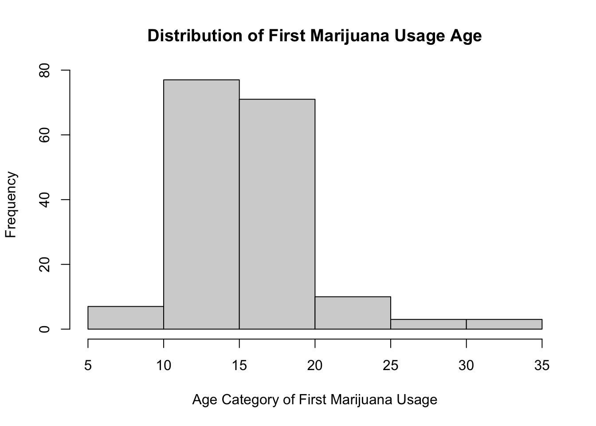

Assignments
This page will contain all the assignments you submit for the class.
Instructions for all assignments
I want you to submit your assignment as a PDF, so I can keep a record of what the code looked like that day. I also want you to include your answers on your personal GitHub website. This will be good practice for editing your website and it will help you produce something you can keep after the class is over.
Download the Assignment1.Rmd file from Canvas. You can use this as a template for writing your answers. It’s the same as what you can see on my website in the Assignments tab. Once we’re done with this I’ll edit the text on the website to include the solutions.
On RStudio, open a new R script in RStudio (File > New File > R Script). This is where you can test out your R code. You’ll write your R commands and draw plots here.
Once you have finalized your code, copy and paste your results into this template (Assignment 1.Rmd). For example, if you produced a plot as the solution to one of the problems, you can copy and paste the R code in R markdown by using the
``{r} ```command. Answer the questions in full sentences and Save.Produce a PDF file with your answers. To do this, knit to PDF (use Knit button at the top of RStudio), locate the PDF file in your docs folder (it’s in the same folder as the Rproj), and submit that on on Canvas in Assignment 1.
Build Website, go to GitHub desktop, commit and push. Now your solutions should be on your website as well.
Assignment 1
Collaborators: Rachael Villari, Elizabeth Stoner, and Halle Wasser
This assignment is due on Canvas on Monday 9/20 before class, at 10:15 am. Include the name of anyone with whom you collaborated at the top of the assignment.
Problem 1
Install the datasets package on the console below using install.packages("datasets"). Now load the library.
library(knitr)
library(datasets)Load the USArrests dataset and rename it dat. Note that this dataset comes with R, in the package datasets, so there’s no need to load data from your computer. Why is it useful to rename the dataset?
dat <- USArrestsAnswer: Renaming the dataset provides a short-hand way of calling it as I code instead of trying to remember the name of the dataset.
Problem 2
Use this command to make the state names into a new variable called State.
dat$state <- tolower(rownames(USArrests))This dataset has the state names as row names, so we just want to make them into a new variable. We also make them all lower case, because that will help us draw a map later - the map function requires the states to be lower case.
List the variables contained in the dataset USArrests.
names(dat)## [1] "Murder" "Assault" "UrbanPop" "Rape"Answer: The variables are Murder, Assault, UrbanPop, Rape, and state.
Problem 3
What type of variable (from the DVB chapter) is Murder?
Answer: It is a quantitative/continuous variable.
What R Type of variable is it?
typeof("Murder")## [1] "character"Answer: It is a character data type.
Problem 4
What information is contained in this dataset, in general? What do the numbers mean?
?USArrestsAnswer: This dataset contains 50 observations/instances on 5 variables: Murder (murder arrests per 100,000), Assault (assault arrests per 100,000), UrbanPop (percent urban population), and Rape (rape arrests per 100,000), and state.
Problem 5
Draw a histogram of Murder with proper labels and title.
hist(dat$Murder, main="Histogram of Murder Arrests", xlab="Murder Arrests \n
per 100,000", ylab="Frequency")
Problem 6
Please summarize Murder quantitatively. What are its mean and median? What is the difference between mean and median? What is a quartile, and why do you think R gives you the 1st Qu. and 3rd Qu.?
summary(dat$Murder)## Min. 1st Qu. Median Mean 3rd Qu. Max.
## 0.800 4.075 7.250 7.788 11.250 17.400Answer: The mean number of murder arrests is 7.7888 per 100,000, and the median is 7.25 murder arrests per 100,000. According to HS, the mean and median are both measures of central tendency. However, the mean is described to be the value that each observation would receive if the values were redistributed among the dataset, and the mean on a histogram is the “balancing point”. The median is the value that is at the center if all the values were put in an ordered list. According to HS, the interquartile range (IQR) is a measure of spread, and the "quartiles…are the three values which divide the distribution into even fourths. The IQR is obtained by subtracting the 1st quartile from the 3rd quartile which is why R gives us both these values.
Problem 7
Repeat the same steps you followed for Murder, for the variables Assault and Rape. Now plot all three histograms together. You can do this by using the command par(mfrow=c(3,1)) and then plotting each of the three.
summary(dat$Assault)## Min. 1st Qu. Median Mean 3rd Qu. Max.
## 45.0 109.0 159.0 170.8 249.0 337.0summary(dat$Rape)## Min. 1st Qu. Median Mean 3rd Qu. Max.
## 7.30 15.07 20.10 21.23 26.18 46.00Answer: The mean number of assault arrests is 170.8 per 100,000, and the median is 159 assault arrests per 100,000. The mean number of rape arrests is 21.23 per 100,000, and the median is 20.1 rape arrests per 100,000.
What does the command par do, in your own words (you can look this up by asking R ?par)?
Answer: There are a lot of graphical features in R. Par() allows us to search and set them.
par(mfrow=c(3,1))
hist(dat$Murder, main="Histogram of Murder Arrests", xlab="Murder Arrests \n
per 100,000", ylab="Frequency")
hist(dat$Assault, main="Histogram of Assault Arrests", xlab="Assault Arrests \n
per 100,000", ylab="Frequency")
hist(dat$Rape, main="Histogram of Rape Arrests", xlab="Rape Arrests \n
per 100,000", ylab="Frequency")What can you learn from plotting the histograms together?
Answer: Murder and rape arrests are right skewed, which is good. What I thought was interesting were how the assault arrests are pretty normally distributed. Additionally, I see the average assault arrests per 100,000 were much greater than the average murder or rape arrests per 100,000 which makes sense.
Problem 8
In the console below (not in text), type install.packages("maps") and press Enter, and then type install.packages("ggplot2") and press Enter. This will install the packages so you can load the libraries.
Run this code:
library('maps') # load maps library into R session
library('ggplot2') # load ggplot2 into R session
ggplot(dat, aes(map_id=state, fill=Murder)) + # call ggplot function, use dat
# dataframe, and set up plot aesthetics
geom_map(map=map_data("state")) + # create map of all states
expand_limits(x=map_data("state")$long, y=map_data("state")$lat) # expand plot limitsWhat does this code do? Explain what each line is doing.
Answer: This code is creating a heat map of the murder arrests per 100,000 in each state. See comments for a description of each line of code.
\[\\[2in]\]
Assignment 2
Problem 1
#load library
library(tidyverse)
library(ggplot2)
# Read the data
dat <- read.csv(file = 'dat.nsduh.small.1.csv')What are the dimensions of the dataset?
nrow(dat)## [1] 171ncol(dat)## [1] 7names(dat)## [1] "mjage" "cigage" "iralcage" "age2" "sexatract" "speakengl"
## [7] "irsex"Answer: This dataset contains 171 rows/observations and 7 columns.
Problem 2
What is this dataset about? Who collected the data, what kind of sample is it, and what was the purpose of generating the data?
Answer: This dataset is a sample of the 2019 National Survey of Drug Use and Health (NSDUH). According to their website (https://nsduhweb.rti.org/respweb/about_nsduh.html), NSDUH is sponsored by the Substance Abuse and Mental Health Services Administration (SAMHSA) and the US Dept. of Health and Human Services, and it serves as a sample to inform policymakers of tobacco, alcohol, and drug use in the US population as well as other health related concerns. Their website also states that they survey approximately 70,000 people each year ages 12 and up. The variables of the provided dataset are as follows: ‘mjage’, ‘cigage’, ‘iralcage’, ‘age2’, ‘sexatract’, ‘speakengl’, and ‘irsex’. ‘Mjage’, ‘cigage’, and ‘iralcage’ refer to the age at which participants first started using marijuana or hashish, cigarrettes, and alcohol, respectively. The ‘age2’ variable is the age of the respondent at the end of the questionnaire. ‘Sexatract’, ‘speakengl’, and ‘irsex’ are the respondent’s sexual attraction/orientation, English speaking level, and gender.
Problem 3: Age and gender
What is the age distribution of the sample like?
hist(dat$age2, xlab = 'Age Category', main = 'Histogram of Age')summary(dat$age2)## Min. 1st Qu. Median Mean 3rd Qu. Max.
## 4.00 13.00 15.00 13.98 15.00 17.00dat %>% group_by(age2) %>% count()## # A tibble: 13 x 2
## # Groups: age2 [13]
## age2 n
## <int> <int>
## 1 4 2
## 2 6 1
## 3 7 1
## 4 8 2
## 5 9 7
## 6 10 3
## 7 11 6
## 8 12 7
## 9 13 27
## 10 14 16
## 11 15 62
## 12 16 24
## 13 17 13Answer: It appears to be left skewed, and it looks like there’s a peak at 15 which the codebook describes as being 35-49 years old. This means that the majority of the people within this dataset are not teenagers
Do you think this age distribution representative of the US population? Why or why not?
Answer: No, because this is a very small sample size (171 people), and it wouldn’t be representative of the millions of people that live in the US. Additionally, the NSDUH only surveys people aged 12 and older meaning children under 12 would be excluded from the age distribution. Also there are not many teens or people in their early twenties represented by this dataset.
Is the sample balanced in terms of gender? If not, are there more females or males?
hist(dat$irsex, xlab = 'Gender (1 = Male, 2 = Female)', main = 'Distribution of Gender')dat %>% count(irsex)## irsex n
## 1 1 91
## 2 2 80Answer: No, the sample is not balanced in terms of gender. There are more males (91 total) than females (80 total).
tab.agesex <- table(dat$irsex, dat$age2)
barplot(tab.agesex,
main = "Stacked barchart",
xlab = "Age category", ylab = "Frequency",
legend.text = rownames(tab.agesex),
beside = FALSE) # Stacked bars (default)
Answer: It’s difficult to be certain by just looking at this bar plot, but visually it appears as though this dataset contains males who are older and females who are younger. For example, the age categories of 14, 16, and 17 look to have more men than women while categories 8, 9, 10, 11, and 12 seem to have more females than males. This might also be because there are more males than females in this dataset. However, it is clear that the main age categories in this dataset are 13-17.
Problem 4: Substance use
For which of the three substances included in the dataset (marijuana, alcohol, and cigarettes) do individuals tend to use the substance earlier?
summary(dat$mjage)## Min. 1st Qu. Median Mean 3rd Qu. Max.
## 7.00 14.00 16.00 15.99 17.50 35.00summary(dat$cigage)## Min. 1st Qu. Median Mean 3rd Qu. Max.
## 10.00 15.00 17.00 17.65 19.00 50.00summary(dat$iralcage)## Min. 1st Qu. Median Mean 3rd Qu. Max.
## 5.00 13.00 15.00 14.95 17.00 23.00hist(dat$mjage, xlab = 'Age Category of First Marijuana Usage', main = 'Distribution of First Marijuana Usage Age')
hist(dat$cigage, xlab = 'Age Category of First Cigarrete Usage', main = 'Distribution of First Cigarrete Usage Age')
hist(dat$iralcage, xlab = 'Age Category of First Alcohol Usage', main = 'Distribution of First Alcohol Usage Age')
Answer: From the summary statistics and the histograms, it looks like people tend to use alcohol earlier than cigarettes or marijuana, mainly around the age category of 15 (35-49 years old).
Question 5
What does the distribution of sexual attraction look like? Is this what you expected?
What is the distribution of sexual attraction by gender?
ggplot(dat, aes(x=sexatract)) +
geom_histogram() +
xlab('Sexual Attraction Category') +
ggtitle('Distribution of Sexual Attraction \n Including Bad Data Entries')## `stat_bin()` using `bins = 30`. Pick better value with `binwidth`.Answer: This histogram includes the entries where people chose not to answer or the entries were blank, answered, or bad data for whatever reason. I expected to see these types of entries in this dataset.
ggplot(dat, aes(x=sexatract)) +
geom_histogram() +
xlim(0, 6) +
xlab('Sexual Attraction Category') +
ggtitle('Distribution of Sexual Attraction \n Excluding Bad Data Entries')## `stat_bin()` using `bins = 30`. Pick better value with `binwidth`.## Warning: Removed 3 rows containing non-finite values (stat_bin).## Warning: Removed 2 rows containing missing values (geom_bar).Answer: I generated this histogram to isolate the sexual attraction categories by excluding the bad data entries. This clearly shows the majority of people in this dataset are only attracted to the opposite sex which is what I expected since heterosexuality is the majority sexual orientation in society. It is followed by mostly opposite sex attraction and attraction to both sexes. I would say none of this is a surprise given my sense of sexual orientations within the US.
tab.attsex <- table(dat$irsex, dat$sexatract)
barplot(tab.attsex,
main = "Sexual Attraction Across Genders",
xlab = 'Sexual Attraction Category',
ylab = 'Frequency',
legend.text = rownames(tab.attsex),
beside = FALSE)Answer: This plot shows that the males mostly comprised the opposite sex attraction category as well as the strictly same sex attraction and unsure sexual attraction categories. They were also the majority sex that skipped this question altogether. It’s interesting that females were the majority in the mostly opposite sex attraction and the both sex attraction categories.
###Problem 6: English speaking
What does the distribution of English speaking look like in the sample? Is this what you might expect for a random sample of the US population?
Are there more English speaker females or males?
hist(dat$speakengl,
xlab = 'English Speaking Level',
main = 'Distribution of English Speaking Levels')
Answer: The vast majority of people in this survey speak English very well followed by people who speak it well and those who don’t speak it at all. I would expect this from a random sample of the US population since the dominant language is English although we are a melting pot country with a variety of people groups.
tab.englsex <- table(dat$irsex, dat$speakengl)
barplot(tab.englsex,
main = "English Speaking Level Across Genders",
xlab = 'English Speaking Level',
ylab = 'Frequency',
legend.text = rownames(tab.englsex),
beside = FALSE)dat %>% group_by(irsex, speakengl) %>% count()## # A tibble: 5 x 3
## # Groups: irsex, speakengl [5]
## irsex speakengl n
## <int> <int> <int>
## 1 1 1 84
## 2 1 2 7
## 3 2 1 77
## 4 2 2 1
## 5 2 3 2Answer: From these statistics and plot, it appears as though there are more male English speakers in this dataset, but one has to remember there are more males in the dataset overall. Additionally, it’s interesting that there are no males who rated themselves as not speaking English at all.
Exam 1
Load the data into an R data frame.
df <- read.csv("fatal-police-shootings-data.csv")
library(ggplot2)
library(tidyverse)
library(tidyr)Problem 1 (10 points)
- Describe the dataset. This is the source: https://github.com/washingtonpost/data-police-shootings . Write two sentences (max.) about this.
Answer: According to the codebook, this dataset consists of fatal shootings (observations) of civilians by police officers on duty since 2015. The dataset includes information (variables/columns) of the victims such as age, race, gender, threat level, etc.
- How many observations are there in the data frame?
nrow(df)## [1] 6594Answer: There are 6594 observations in this dataset.
- Look at the names of the variables in the data frame. Describe what “body_camera”, “flee”, and “armed” represent, according to the codebook. Again, only write one sentence (max) per variable.
names(df)## [1] "id" "name"
## [3] "date" "manner_of_death"
## [5] "armed" "age"
## [7] "gender" "race"
## [9] "city" "state"
## [11] "signs_of_mental_illness" "threat_level"
## [13] "flee" "body_camera"
## [15] "longitude" "latitude"
## [17] "is_geocoding_exact"“Body_camera” indicates ‘true’ or ‘false’ if the officer wore a body camera and recorded a portion of the shooting. “Flee” is if the victim was fleeing by foot, car, or not fleeing, and “armed” tells if the victim’s arm is determined or unknown or if they were not armed.
- What are three weapons that you are surprised to find in the “armed” variable? Make a table of the values in “armed” to see the options.
table(df$armed)##
## air conditioner
## 207 1
## air pistol Airsoft pistol
## 1 3
## ax barstool
## 24 1
## baseball bat baseball bat and bottle
## 20 1
## baseball bat and fireplace poker baseball bat and knife
## 1 1
## baton BB gun
## 6 15
## BB gun and vehicle bean-bag gun
## 1 1
## beer bottle binoculars
## 3 1
## blunt object bottle
## 5 1
## bow and arrow box cutter
## 1 13
## brick car, knife and mace
## 2 1
## carjack chain
## 1 3
## chain saw chainsaw
## 2 1
## chair claimed to be armed
## 4 1
## contractor's level cordless drill
## 1 1
## crossbow crowbar
## 9 5
## fireworks flagpole
## 1 1
## flashlight garden tool
## 2 2
## glass shard grenade
## 4 1
## gun gun and car
## 3798 12
## gun and knife gun and machete
## 22 3
## gun and sword gun and vehicle
## 1 17
## guns and explosives hammer
## 3 18
## hand torch hatchet
## 1 14
## hatchet and gun ice pick
## 2 1
## incendiary device knife
## 2 955
## knife and vehicle lawn mower blade
## 1 2
## machete machete and gun
## 51 1
## meat cleaver metal hand tool
## 6 2
## metal object metal pipe
## 5 16
## metal pole metal rake
## 4 1
## metal stick microphone
## 3 1
## motorcycle nail gun
## 1 1
## oar pellet gun
## 1 3
## pen pepper spray
## 1 2
## pick-axe piece of wood
## 4 7
## pipe pitchfork
## 7 2
## pole pole and knife
## 3 2
## railroad spikes rock
## 1 7
## samurai sword scissors
## 4 9
## screwdriver sharp object
## 16 14
## shovel spear
## 7 2
## stapler straight edge razor
## 1 5
## sword Taser
## 23 34
## tire iron toy weapon
## 4 226
## unarmed undetermined
## 421 188
## unknown weapon vehicle
## 82 213
## vehicle and gun vehicle and machete
## 8 1
## walking stick wasp spray
## 1 1
## wrench
## 1Answer: It’s kind of funny to see an air conditioner, binoculars, and microphone as weapons.
Problem 2 (10 points)
- Describe the age distribution of the sample. Is this what you would expect to see?
hist(df$age, main = 'Distribution of Age', xlab = 'Age')Answer: The age distribution is right skewed and unimodal with the peak being at around early to mid-30s. I would somewhat expect to see this because it’s probable that police don’t view older adults as threats typically, but I’m not exactly sure of this.
- To understand the center of the age distribution, would you use a mean or a median, and why? Find the one you picked.
summary(df$age)## Min. 1st Qu. Median Mean 3rd Qu. Max. NA's
## 6.00 27.00 35.00 37.12 45.00 91.00 308I would use the median (35 years old) because the age distribution is right skewed, so if the mean were to be used, it wouldn’t give an accurate representation of centrality.
- Describe the gender distribution of the sample. Do you find this surprising?
barplot(table(df$gender), main = "Distribution of Gender")
df %>% group_by(gender) %>% count()## # A tibble: 3 x 2
## # Groups: gender [3]
## gender n
## <chr> <int>
## 1 "" 3
## 2 "F" 293
## 3 "M" 6298Answer: The gender distribution is very unbalanced with males making up the majority (6298/6594 = 95.5%) of the dataset. This surprises me because although I expected more males in the dataset, I didn’t think they would make up about 96% of the dataset. It looks like the gender column also contains some null values.
Problem 3 (10 points)
- How many police officers had a body camera, according to news reports? What proportion is this of all the incidents in the data? Are you surprised that it is so high or low?
barplot(table(df$body_camera), main = 'Body Camera on Officer')df %>% group_by(body_camera) %>% count() %>% mutate(proportion = n/nrow(df))## # A tibble: 2 x 3
## # Groups: body_camera [2]
## body_camera n proportion
## <chr> <int> <dbl>
## 1 False 5684 0.862
## 2 True 910 0.138Answer: Very few, only 13.8%, officers had a body camera. This doesn’t surprise me because when police are on duty, I would imagine they don’t wear cameras on their person.
- In how many of the incidents was the victim fleeing? What proportion is this of the total number of incidents in the data? Is this what you would expect?
barplot(table(df$flee), main = 'Distribution of Flee Methods', xlab = 'Flee Method')df %>% group_by(flee) %>% count() %>% mutate(proportion = n/nrow(df))## # A tibble: 5 x 3
## # Groups: flee [5]
## flee n proportion
## <chr> <int> <dbl>
## 1 "" 491 0.0745
## 2 "Car" 1058 0.160
## 3 "Foot" 845 0.128
## 4 "Not fleeing" 3952 0.599
## 5 "Other" 248 0.0376Answer: Victims fleeing by car or foot make up 28.9% of the dataset. This number excludes null or ‘other’ values. This is expected because I imagine most people don’t flee from police.
Problem 4 (10 points)
- Describe the relationship between the variables “body camera” and “flee” using a stacked barplot. What can you conclude from this relationship?
Hint 1: The categories along the x-axis are the options for “flee”, each bar contains information about whether the police officer had a body camera (vertically), and the height along the y-axis shows the frequency of that category).
Hint 2: Also, if you are unsure about the syntax for barplot, run ?barplot in R and see some examples at the bottom of the documentation. This is usually a good way to look up the syntax of R code. You can also Google it.
tab.camflee <- table(df$body_camera, df$flee)
barplot(tab.camflee,
main = "Relationship Between Body Cams and Fleeing Victims",
xlab = 'Type of Fleeing',
ylab = 'Frequency',
legend.text = rownames(tab.camflee),
beside = FALSE)df %>% group_by(body_camera, flee) %>% count()## # A tibble: 10 x 3
## # Groups: body_camera, flee [10]
## body_camera flee n
## <chr> <chr> <int>
## 1 False "" 429
## 2 False "Car" 943
## 3 False "Foot" 699
## 4 False "Not fleeing" 3408
## 5 False "Other" 205
## 6 True "" 62
## 7 True "Car" 115
## 8 True "Foot" 146
## 9 True "Not fleeing" 544
## 10 True "Other" 43Answer: It’s important to note that these variables contain some null and ‘other’ values, and the ‘true’ and ‘false’ in the legend indicates whether or not the officer had a body camera. It looks like a body camera was used mostly on victims who didn’t flee followed by the victims that fled on foot. This makes sense since the majority of the victims in this dataset didn’t flee.
Extra credit (10 points)
- What does this code tell us?
mydates <- as.Date(df$date)
head(mydates)
(mydates[length(mydates)] - mydates[1])Answer: This tells us the time difference in days between the oldest and the most recent fatal shooting in this dataset.
On Friday, a new report was published that was described as follows by The Guardian: “More than half of US police killings are mislabelled or not reported, study finds.” Without reading this article now (due to limited time), why do you think police killings might be mislabelled or underreported? Answer: It might be because the ones that are recorded have missing values which causes them to be excluded from the analysis.
Regarding missing values in problem 4, do you see any? If so, do you think that’s all that’s missing from the data? Answer: Yes, there were some, and I think there are more missing values in the dataset.